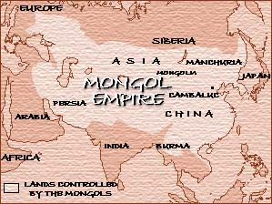

Upcoming stories
First Invasion of Japan: What Went Wrong?
Fermented Mare's Milk: A Mongol Drink for All Occasions
Grand Canal Nears Completion, Links Northern and Southern China
Silk Road Reopens. Textile Trade with Persia and China Flourishes. |
| Weather report: Storm system expected to by-pass Sea of Japan (soon to be renamed) |
|
Welcome
to the Mongol News Network, the up-to-the-minute source for Mongol news from across the
steppes and beyond.
- Who we are
Our beginnings lie north of China, in Mongolia, Manchuria, and Siberia, where our
ancestors lived as nomads.
- How we became masters of the world
In the late 1100’s, Genghis Khan, the exalted founder of our
empire, began to unify our people and organized us into the most
superior fighting force the world has ever seen.
- Our empire
Our prosperous and advanced empire stretches from the Yellow Sea in eastern Asia to the
borders of eastern Europe. Under the great Kublai Khan, we completed our conquest of
China. The Great Khan also has brought Burma, Cambodia, and other countries of Southeast
Asia under his enlightened rule. Japan will soon join our empire.

World Book Map |